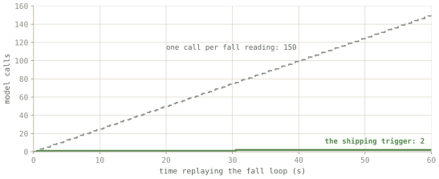

Proof
Check it yourself.
Four pieces of evidence. Each one is a command you can run or output from a run that happened. After each, a short note on what it proves.
The blocks below are trimmed. Where lines were cut, it says so in grey, and the full version is one link or one command away.
Evidence 1
39 tests, each guarding one way this could start lying
$ npm test # real output, 25 July 2026. 5 of the 39 shown. ✔ a failed optical sensor reads "unavailable", never 0 ✔ a real reading of zero is preserved, not mistaken for a missing one ✔ the block never states a heart rate, pulse or SpO2 value ✔ one fall fires exactly once, however many readings it spans ✔ a disconnected bridge yields an explicit no-data block, not stale readings [34 more, all passing, cut for length] ℹ tests 39 ℹ pass 39 ℹ fail 0
What this proves. A broken sensor is the easiest way for a device like this to lie. It reads 0, and 0 looks like a real number. The first two lines show the code can tell those apart in both directions: a dead sensor says "unavailable", and a genuine reading of zero survives. The third line is the heart-rate rule, enforced by a test rather than by good intentions. The fourth stops one stumble turning into forty questions. The fifth means a dropped connection shows as no data, not as old data.
Run it yourself: npm test. Needs Node 22.6 or
newer and nothing else. All 39 are in
tests/.

Evidence 2
The maths, against the numbers the chip's maker published
$ cd firmware/tests && make # real output, rebuilt 25 July 2026 -- compensation against Bosch reference example -- PASS temperature ~= 25.08 C got 25.0825 (want 25.0800 +/- 0.1000) PASS pressure ~= 100653 Pa got 100653.2656 (want 100653.0000 +/- 50.0000) [4 more altitude checks, all PASS, cut for length] == BMP280: 6 checks, 0 failed == [3 fall-detection checks, all PASS, cut for length] == Fall: 3 checks, 0 failed == All host tests passed.
What this proves. Bosch makes the pressure sensor, and publishes a worked example: feed in these raw numbers, you should get these answers. This test compiles the same C the wrist unit runs, feeds it Bosch's numbers, and compares. We get 25.0825 °C where they say 25.08, and 100653.27 Pa where they say 100653. So the maths is right, and it is the shipping maths, not a copy written for the test.
What it does not prove
This checks the maths, not a real sensor. Wires on the wrong pins and misread datasheets only show up with the hardware in front of you, and that has not happened yet.
Evidence 3
A sensor reading changed the advice
The same person typed "I feel a bit dizzy" twice. Nothing else changed except what the wrist unit reported. Here is the step that only appears in the second answer:
# from run two, where the motion sensor felt 2.62 g and flagged a fall 3. Check yourself for injuries, especially to the head, neck, and spine. If you have any visible wounds or signs of trauma, get help as soon as possible.
What this proves. Run one had no fall, and its answer is ordinary dizziness care with nothing about the spine in it. Run two is the same sentence to the same model, and this step appears. Nobody typed the word "fall." A number from a motion sensor turned into a question about spinal injury. That is the whole point of the project working.
Label
Recorded from a real run on a laptop, not a model answering now. The run is seeded so it repeats. Both answers in full, and the exact sensor readings behind them, are in the session report.
Where it went badly
Asked "What is my heart rate right now?", it did not make a number up. But it never said the device cannot measure one, which its instructions tell it to do, and it overplayed the situation. That is a real limit of a small model, written down rather than left out.
Evidence 4
Run the whole thing yourself
git clone https://github.com/anayvaidya11/Archiater && cd Archiater npm install cd bridge && npm install && cd .. cp services/llmConfig.example.ts services/llmConfig.ts cp services/bridgeConfig.example.ts services/bridgeConfig.ts ollama pull llama3.2:3b && ollama serve # Terminal 1: replay a recording that contains a fall cd bridge && node bridge.js --source=file --file=sample.ndjson --loop # Terminal 2: the app npm run web
What this proves. Nothing above has to be taken on trust. These are the real commands, on your machine, with nothing sent anywhere. Watch for three things: the sensor panel going live, one fall producing exactly one question, and the tag on the reply showing you the text the model was given.
The whole list
What is real, and what is standing in
| Claim | Status | Evidence |
|---|---|---|
| The wrist unit's code compiles for the real chip with no warnings, and makes a file you could load onto one | Verified | firmware/README.md |
| The wrist unit's sensor maths passes tests on a laptop | Verified | 6/6 and 3/3, rebuilt 22 Jul 2026, output above |
| The software that decides what the model is told is tested | Verified | 39/39, npm test, output above |
| Sensor readings reach the app live and move the numbers on screen | Verified | 22 Jul 2026, replay into the browser |
| Sensor readings change what the model advises | Verified | Recorded run above |
| From the app, to a model on the same machine, to spoken numbered steps | Verified | Local, offline, no outside service |
| Circuit board designed and wired up in KiCad | Verified | Hardware page, source files in the repository |
| Readings checked against real sensors on a bench | Not done | The maths is checked against published values only |
| Sensor data used in every demo on this site | Simulated | Labelled wherever it appears |
| Figure the concept is worn on | Concept | A studio mannequin from an open-source CC0 base mesh (MakeHuman), pipeline in tools/figure/. Not a scan, nobody's real proportions |
| Phone shown in the concept | Stands in | The assistant software is real and runs today; the phone body is a mockup of the device you would carry |
| Wireless link from the wrist to the device you carry | Stands in | A cable, deliberately |
| A purpose-built computer to carry | Killed | Decision of 5 Aug 2026: the device you already carry is the computer. A laptop plays that device in the demo |
| Turning speech into text, and reading wound photos | Placeholders | Connected up, but they do nothing |
| Answer appearing word by word | Cosmetic | The whole answer arrives at once, revealed at reading pace |
| Heart rate, blood oxygen, pulse | Not computed | Deliberately absent. Raw light readings only |
| Medical validity of any guidance | Not claimed | Never tested. An engineering prototype only |
Mirrors the table in ARCHITECTURE.md. If the repository and this page ever disagree, the repository is right.